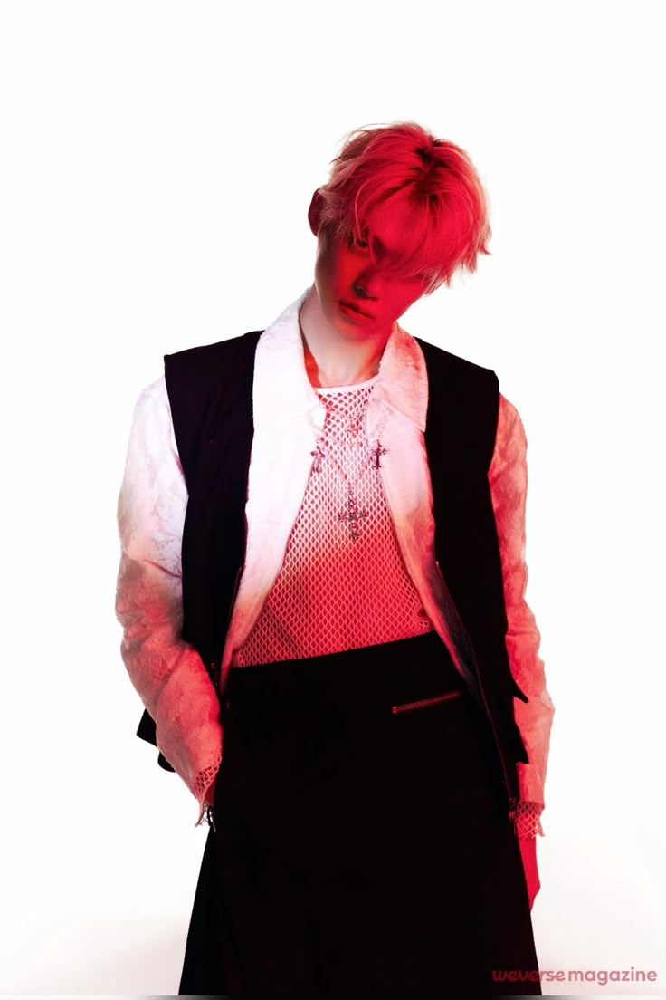
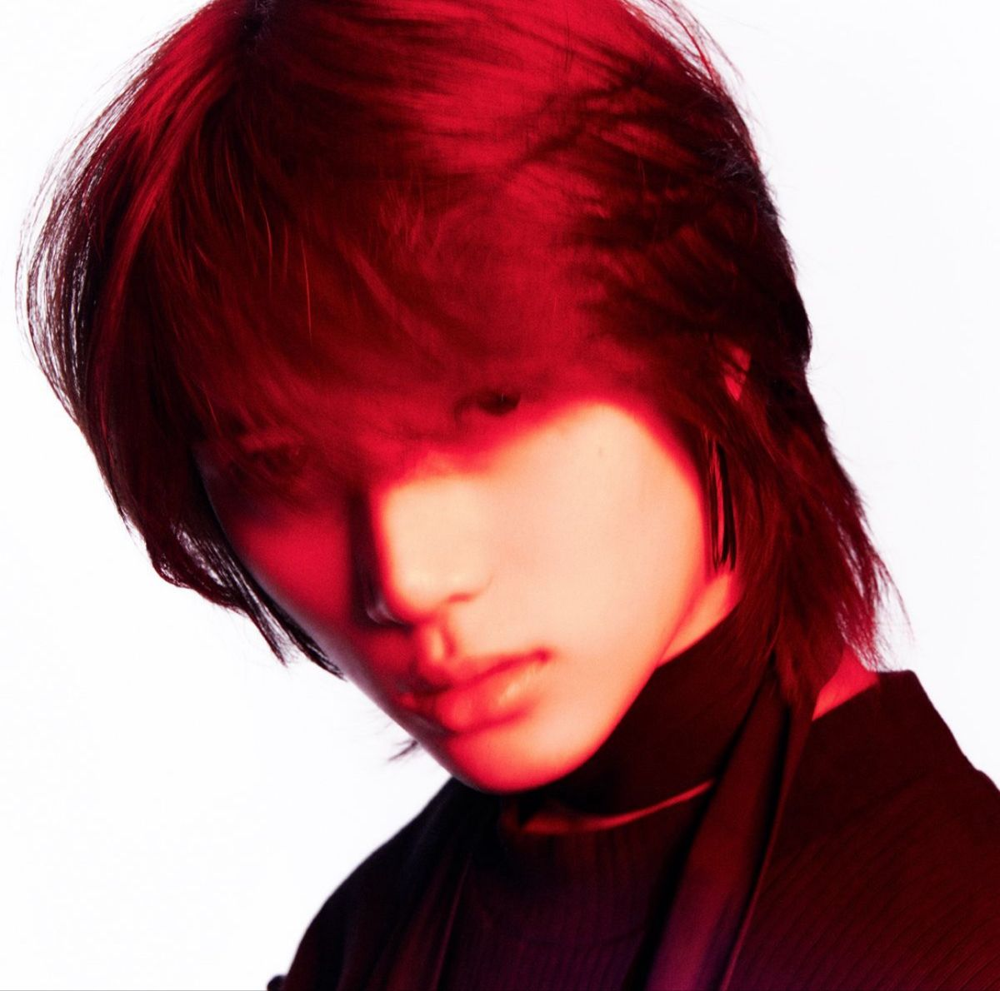

Soobin
Choi Soobin, conocido artísticamente como Soobin, nació el 5 de diciembre de 2000 / Corea del Sur. Fue presentado como el segundo integrante de TXT y poco después se confirmó que sería el líder del grupo. Debutó oficialmente el 4 de marzo de 2019 con “Crown”. Desde entonces ha participado en la composición de varias canciones, comenzando con “Maze in the Mirror”. También ha participado en diferentes proyectos musicales, incluyendo covers como “In My Blood” y “Thank U, Next”. Estas participaciones muestran otra de sus facetas dentro del grupo, además de su papel como líder, cantante y bailarín.
Yeonjun
Choi Yeonjun, conocido artísticamente como Yeonjun, nació el 13 de septiembre de 1999 / Corea del Sur. Conocido como el “aprendiz legendario” de Big Hit debido a sus buenos resultados en las evaluaciones de baile, canto y rap. Fue presentado como el primer integrante de TXT. Desde entonces, ha participado en diferentes canciones del grupo como compositor y letrista, demostrando también su lado creativo. Además de sus actividades con TXT, Yeonjun ha realizado varios proyectos individuales. Colaboró con otros artistas como ENHYPEN, Salem Ilese y KATSEYE. En 2024 comenzó oficialmente su carrera como solista con “Ggum”, canción que mostró una faceta más personal de su estilo.

Beomgyu
Choi Beomgyu, conocido artísticamente como Beomgyu, nació el 13 de marzo de 2001 / Corea del Sur. Desde pequeño mostró interés por la música, formó parte de una banda de rock, donde tocaba la guitarra eléctrica. Fue presentado como el último integrante de TXT. Entre sus composiciones se encuentran “Maze in the Mirror”, “What If I Had Been That Puma”, “No Rules”, “MOA Diary (Dubaddu Wari Wari)”, “Thursday's Child Has Far to Go”, “Happy Fools”, “Dreamer” y “Blue Spring”. El 27 de marzo de 2025, lanzó su primer mixtape en solitario, “Panic”, una canción que transmite un mensaje de reflexión y esperanza. Participó en su producción y realizó el dibujo utilizado para la portada.

Taehyun
Kang Taehyun, conocido artísticamente como Taehyun, nació el 5 de febrero de 2002 / Corea del Sur. Desde pequeño estuvo relacionado con el mundo del entretenimiento, ya que participó en algunos comerciales. Su interés por convertirse en artista aumentó al conocer al grupo SHINee. Fue presentado como el cuarto integrante de TXT. Taehyun ha participado en la composición de diferentes canciones de TXT, entre ellas “Maze in the Mirror”. Además, ha realizado diferentes covers y colaboraciones musicales. Entre sus trabajos individuales se encuentran “Over and Over Again”, “In My Blood”, entre mucha más.
Huening Kai
Kai Kamal Huening, conocido artísticamente como Huening Kai, nació el 14 de agosto de 2002 / Hawái. Desde pequeño estuvo rodeado de música gracias a su familia y aprendió a tocar diferentes instrumentos. Fue presentado como el tercer integrante de TXT. Poco después comenzó a participar en la composición de canciones del grupo, siendo “Roller Coaster” una de sus primeras participaciones. Huening Kai ha participado en la composición de canciones como “MOA Diary (Dubaddu Wari Wari)”, “Opening Sequence”, “Lonely Boy” y “Happy Fools”. En “Dear Sputnik”, además de componer, también participó en la producción.